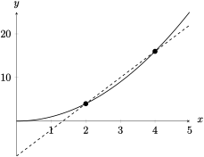

Section 1.4 The Tangent and Velocity Problems
Objectives
Use secant lines to determine average rate of change of a function
Describe the process of approximating the slope of a tangent line by using slopes of secant lines.
Use the tangent line to describe qualitative characteristics of a function
Use average velocity to approximate instantaneous velocity, and describe the relationship between average velocity/average rate of change and instantaneous velocity/instantaneous rate of change
Subsection 1.4.1 Before Class
https://mymedia.ou.edu/media/1.4-1/1_dfuhtyzsSubsubsection 1.4.1.1 Tangent Lines & Secant Lines
Recall that the slope of the line between two points on the curve \(f(x)\) is given in a few ways:
Definition 1.4.1. Tangent/Secant Lines.
The tangent line to a curve \(f(x)\) is a line which intersects the curve at only one point. A secant line intersects a curve in at least two points.Example 1.4.2.
The points \((2,4)\) and \((4,16)\) lie on the graph of \(f(x)\text{.}\)Find the slope of the secant line between these two points.
Find the formula for the secant line between these points.
Assume \(f(x) = x^2\text{.}\) Give a quick sketch of \(f(x)\text{,}\) along with the points given (you don't have to be super precise). How “close” are we to having a tangent line? Is there a way to get “closer” to having a tangent line?
The slope is 6
\(\displaystyle y = 6x-8\)
-

We aren't very close to having a tangent line; we could get closer to a tangent line by making the points closer.
Example 1.4.3.
The function \(f(x) = x^2\) is graphed below.\(\displaystyle (0.7,0.49)\)
\(\displaystyle (0.8,0.64)\)
\(\displaystyle (0,9,0.81)\)
\(\displaystyle (1.3,1.69)\)
\(\displaystyle (1.2,1.44)\)
\(\displaystyle (1.1, 1.21)\)
1.7
1.8
1.9
2.3
2.2
2.1
Answers vary for secant lines
Subsection 1.4.2 Pre-Class Activities
Example 1.4.4.
In Example 1.4.3, what happened to the slopes as you moved from (a) to (c), and from (d) to (f)? Be descriptive.
Example 1.4.4 does not give us an exact value for the tangent line. How could we improve the approximation we got?
Moving from (a) to (c), the slopes increase toward 2; moving from (d) to (f), the slopes decrease toward 2.
We can improve the approximation by taking the secant line through points closer to \((1,1)\text{.}\)
Subsection 1.4.3 In Class
Example 1.4.5.
Use a calculator to estimate the slope of the tangent line to the curve \(f(x) = \sqrt{x}\) at \(x = 3\text{.}\) Record your answers will full decimal accuracy, and round your final answer to the hundredths place, if necessary.| \(x\) | \(\dfrac{f(x)-f(3)}{x-3}\) |
| \(2.9\) | |
| \(2.99\) | |
| \(2.999\) | |
| \(2.9999\) | |
| \(2.99999\) | |
| Left-hand slope \(\approx\) |
| \(x\) | \(\dfrac{f(x)-f(3)}{x-3}\) |
| \(3.1\) | |
| \(3.01\) | |
| \(3.001\) | |
| \(3.0001\) | |
| \(3.00001\) | |
| Right-hand slope \(\approx\) |
Slope at \(x=3\approx\)
| \(x\) | \(\dfrac{f(x)-f(3)}{x-3}\) |
| \(2.9\) | 0.291122 |
| \(2.99\) | 0.288916 |
| \(2.999\) | 0.288699 |
| \(2.9999\) | 0.288678 |
| \(2.99999\) | 0.288675 |
| Left-hand slope \(\approx\) | 0.29 |
| \(x\) | \(\dfrac{f(x)-f(3)}{x-3}\) |
| \(3.1\) | 0.286309 |
| \(3.01\) | 0.288435 |
| \(3.001\) | 0.288651 |
| \(3.0001\) | 0.288673 |
| \(3.00001\) | 0.288675 |
| Right-hand slope \(\approx\) | 0.29 |
Slope at \(x=3\approx 0.29\)
Subsubsection 1.4.3.1 Velocity
Suppose we want to find the average velocity of an object. We can use the same approach as we did above to find this. The average velocity of an object is given by
Question 1.4.6.
What connection might exist between \(v_{avg}\) and the work we did in the previous exercises?Example 1.4.7.
Suppose a ball is dropped from the top of Dale Hall Tower, which is 250m tall. Find the average velocity of the ball over the given intervals. Use the fact that free-fall of an object is given by the equation \(s(t) = 4.9t^2\) m.\(\displaystyle [0,6]\)
\(\displaystyle [2,5]\)
\(\displaystyle [3,3.5]\)
\(\displaystyle [3,3.01]\)
\(\displaystyle [3,3.0001]\)
29.4 m/s
34.3 m/s
31.85 m/s
29.449 m/s
24.40049 m/s
Question 1.4.8.
In the previous example, what do you think the purpose was of looking at so many average velocities?Subsection 1.4.4 After Class Activities
Example 1.4.9.
The point \(P = \lrpar{\dfrac{1}{2},0}\) lies on the curve \(y = \cos \pi x\text{.}\)-
If \(Q\) is the point \((x,\cos \pi x)\text{,}\) find the slope of the secant line \(PQ\) (to six decimal places) for the following values of \(x\text{.}\) Show your work, and make sure yoru calculator is in radian mode.
0.4
0.49
0.4999
0.6
0.51
0.5001
Using part (a), estimate the value of the slope of the tangent line to \(y\) at \(x = 0.5\) to two decimal places.
Using part (b), find an equation for the tangent line to \(y\) at \(x = 0.5\text{.}\)
\(\displaystyle -3.090170\)
\(\displaystyle -3.141076\)
\(\displaystyle -3.141593\)
\(\displaystyle -3.090170\)
\(\displaystyle -3.151076\)
\(\displaystyle -3.141593\)
The slope is about 3.14
\(\displaystyle y = -3.14x + 1.57\)
Example 1.4.10.
If a rock is thrown upward on Io with a velocity of 10 m/s, its height (in meters) \(t\) seconds later is given by \(y = 10t - 1.86\text{.}\)-
Find the average velocity over the given time intervals:
\(\displaystyle [1,2]\)
\(\displaystyle [1,1.5]\)
\(\displaystyle [1,1.1]\)
\(\displaystyle [1,1.01]\)
\(\displaystyle [1,1.001]\)
Estimate the instantaneous velocity when \(t = 1\text{.}\)
10 m/s
10 m/s
10 m/s
10 m/s
10 m/s
10 m/s